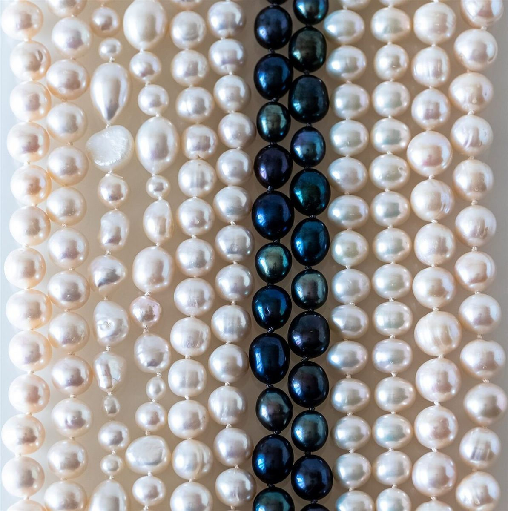

制作側の連想
「シフォン」から、型紙を思い浮かべた
店名の由来は分かりません。制作側は「シフォン」という音から、薄くて軽い布を連想し、洋裁の型紙(裁ち合わせ図)をこのサイトの形にしました。各ページを「パーツ」に見立て、合印(▲)や破線の裁ち線を飾りに使っています。お店の理念や由来とは無関係の、制作側の連想です。
裁ち合わせ図(布のイメージ)
四枚の布を並べて。
写真はお店のものではありません。国外または撮影地不明のフリー素材です。
A 前身頃
撮影地不明のイメージ
B 後ろ身頃
撮影地不明のイメージ
C 袖国外のイメージ(スウェーデン)

D 衿
撮影地不明のイメージ
ご案内
お店のこと(確認できたものだけ)
| 所在地 | 〒399-0701 長野県塩尻市広丘吉田341-3 |
|---|---|
| 電話 | 0263-50-6635 |
| 営業時間 | 準備中 |
| 定休日 | 準備中 |
| ご予約 | 準備中 |
| 駐車場 | 準備中 |
| SNS | Instagram @cafe_chiffon59 |